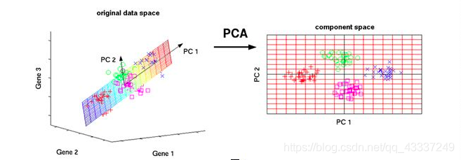
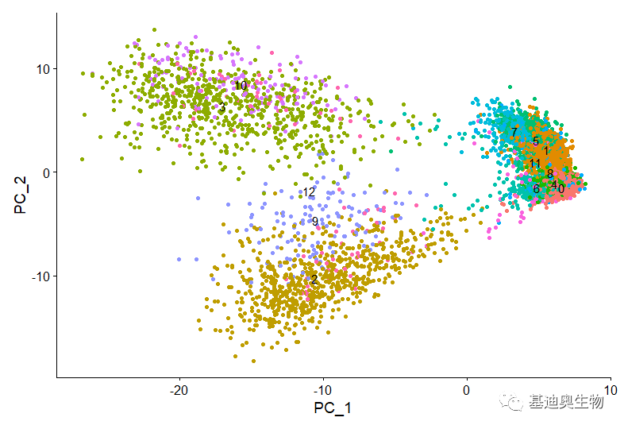
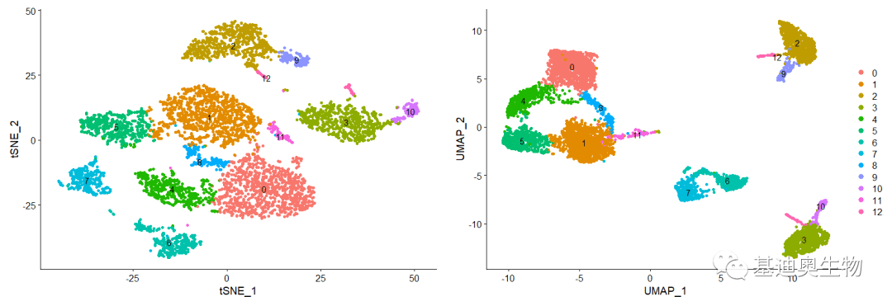
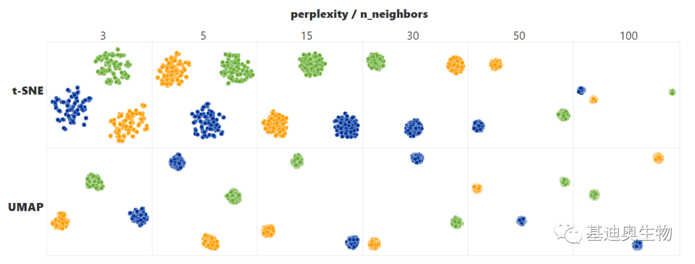
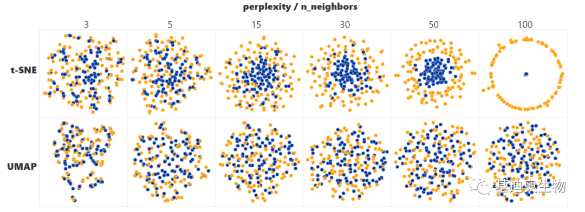
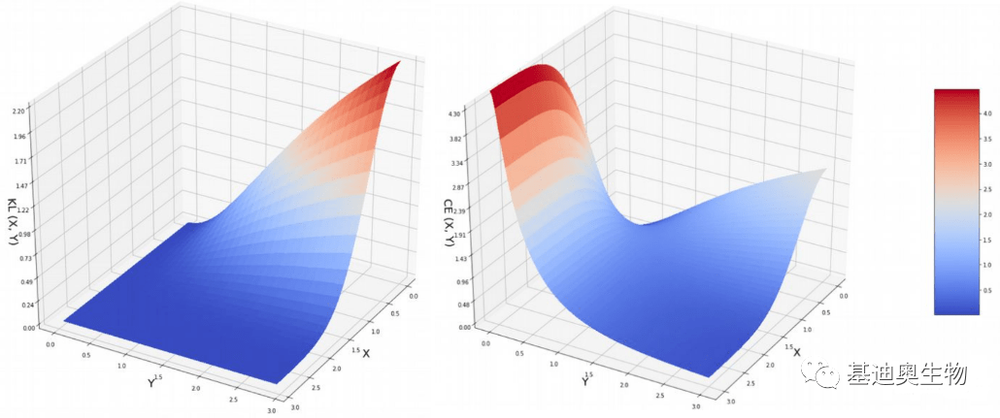
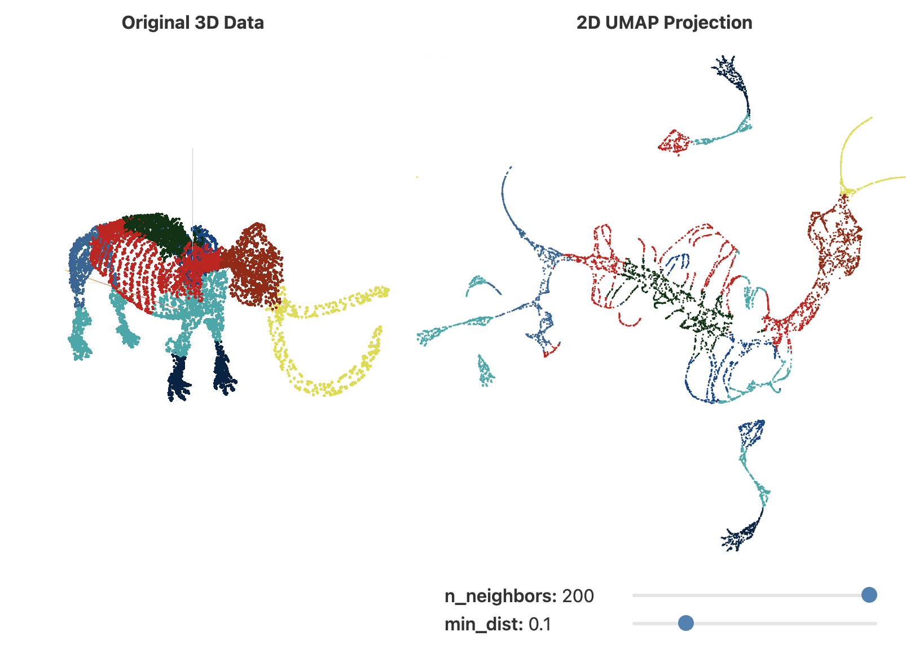
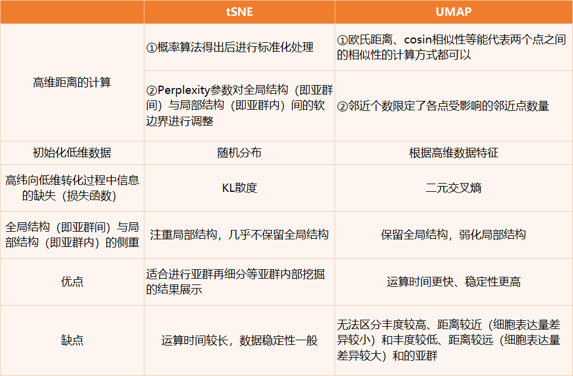

一、降维目的与方法概述
在实际的机器学习项目中，特征选择/降维是必须进行的，因为在数据中存在以下几个方面的问题：
- 数据的多重共线性：特征属性之间存在着相互关联关系。多重共线性会导致解的空间不稳定， 从而导致模型的泛化能力弱；
- 高纬空间样本具有稀疏性，导致模型比较难找到数据特征；过多的变量会妨碍模型查找规律；
- 仅仅考虑单个变量对于目标属性的影响可能忽略变量之间的潜在关系。
降维是指通过保留一些比较重要的特征，去除一些冗余的特征，减少数据特征的维度。而特征的重要性取决于该特征能够表达多少数据集的信息，也取决于使用什么方法进行降维。一般情况会先使用线性的降维方法再使用非线性的降维方法，通过结果去判断哪种方法比较合适。
1. 通过特征选择/降维的目的是：
- 减少特征属性的个数，确保特征属性之间是相互独立的（原数据中既有平方米和平方英里的特征–即相关性大的特征）
- 解决特征矩阵过大， 导致计算量比较大，训练时间长的问题；并且能够使用那些不适合于高维度的算法；
- 便于观察和挖掘信息（如将数据维度降到2维或者3维使之能可视化）
- 特征太多或者太复杂会使得模型过拟合。
2. 降维算法一般分为两类:
- 寻求在数据中保存距离结构的：PCA、MDS等算法
- 倾向于保存局部距离而不是全局距离的。t-SNE、UMAP
下面我们对这些方法的原理进行介绍，并在此基础上采取iris经典数据集进行绘制图
二、PCA（Principal Component Analysis，主成分分析）
1. PCA概念
PCA 分析(Principal Component Analysis)，即主成分分析，是一种对数据进行简化分析的技术，这种方法可以有效的找出数据中最“主要”的元素和结构，去除噪音和冗余，将原有的复杂数据降维，揭示隐藏在复杂数据背后的简单结构。
PCA的主要思想是将n维特征映射到k维上，这k维是全新的正交特征也被称为主成分，是在原有n维特征的基础上重新构造出来的k维特征。
PCA的工作就是从原始的空间中顺序地找一组相互正交的坐标轴，新的坐标轴的选择与数据本身是密切相关的。
可以看到下图中，原本不同维度（Gene）经过正交特征提取后，变为2维，便于我们更好地观测结果，注意新构建的特征是在原本特征的基础上构建的，包含其主要信息。
问题是怎样抽取数据的主要成分，如何衡量投影后保存的信息呢？PCA算法使用方差来度量信息量，为了确保降维后的低维度数据尽可能多的保留原始数据的有效信息，需要使降维后的数据尽可能的分散，从方差角度理解就是保留最大的方差。那么如何得到包含最大差异性的主成分呢？实际上，计算数据矩阵的协方差矩阵，得到协方差矩阵的特征值和特征向量，然后选择特征值最大的k个特征对应的特征向量组成的矩阵，就将原始数据矩阵投影到了新的k维特征空间，实现了数据特征的降维。
2. PCA代码实例
1 | #使用经典iris数据集，df读入前四列 |
三、 tSNE (t-distributed Stochastic Neighbor Embedding)
1. tSNE概念
t-SNE （全称为 t-distributed Stochastic Neighbor Embedding，翻译为 t分布-随机邻近嵌入）是通过将数据点之间的相似度转化为条件概率，原始空间中数据点的相似度由高斯联合分布表示，嵌入空间中数据点的相似度由学生t分布表示，能够将高维空间中的数据映射到低维空间中，并保留数据集的局部特性。
2. t-SNE原理
t-SNE本质是一种嵌入模型，主要用于高维数据的降维和可视化。
如果想象在一个三维的球里面有均匀分布的点，如果把这些点投影到一个二维的圆上一定会有很多点是重合的。所以，为了在二维的圆上想尽可能表达出三维里的点的信息，大神Hinton采取的方法：把由于投影所重合的点用不同的距离（差别很小）表示。这样就会占用原来在那些距离上的点，原来那些点会被赶到更远一点的地方。t分布是长尾的，意味着距离更远的点依然能给出和高斯分布下距离小的点相同的概率值。从而达到高维空间和低维空间对应的点概率相同的目的。
3. tSNE的应用（代码）
1 | ################# 数据预处理 |
四、UMAP（Uniform Manifold Approximation and Projection）
1. UMAP概念
对高维单细胞数据的可视化展示，以t-SNE为代表的非线性降维技术，由于其能够避免集群表示的过度拥挤，在重叠区域上能表示出不同的集群而被广泛运用。然而，任何技术方法都不是完美的，t-SNE也一样，它的局限性体现在丢失大规模信息（集群间关系）、计算时间较慢以及无法有效地表示非常大的数据集等方面。
那么，有没有其它方法能在一定程度上克服这些弱点呢？UMAP就是这样一个能解决这些问题的降维和可视化的工具。
UMAP：统一流形逼近与投影(UMAP，Uniform Manifold Approximation and Projection)是一种新的降维流形学习技术。UMAP是建立在黎曼几何和代数拓扑理论框架上的。UMAP是一种非常有效的可视化和可伸缩降维算法。在可视化质量方面，UMAP算法与t-SNE具有竞争优势，但是它保留了更多全局结构、具有优越的运行性能、更好的可扩展性。此外，UMAP对嵌入维数没有计算限制，这使得它可以作为机器学习的通用维数约简技术。
t-SNE和UMAP、PCA的应用比较：
1.小数据集中，t-SNE和UMAP差别不是很大
2.大数据集中，UMAP优势明显（30多万个细胞的降维可视化分析）
3.通过数据降维和可视化展示的比较显示，PCA分群效果最差，UMAP和t-SNE都成功将与相似细胞群相对应的簇聚集在一起。
4.与t-SNE相比，UMAP还提供了有用的和直观的特性、保留了更多的全局结构，特别是细胞子集的连续性。
3.2 UMAP的应用（代码）
1 | 下面以公共数据集iris为例（无需导入）在 R语言 中展示UMAP的实现过程，##为运行结果，可以删除 |
五、PCA、tSNE和UMAP降维可视化的区别
PCA主成分分析法降维是线性降维，对于数据量庞大、细胞类型之间异质性大的单细胞转录组数据来说，单个主成分的协方差偏低（即单个主成分对数据的解释力偏低），我们很难通过一个点代表一个细胞的PCA降维可视化图进行呈现，因为在二维或三维的效果下，可视化图会有大量的点（细胞）重叠，仅通过2~3个主成分特征无法很好地将不同亚群之间的数据区分开来。
而tSNE与UMAP可以将高维空间的结构特征投影至低维空间（二维、三维）之中：在得到低维分布的具体特征后，计算降维过程中空间位置的信息缺失，优化低维分布的位置信息，保留高维特征信息。这两个降维方式也因此成为了单细胞转录组最主要的可视化方式。那在实际应用中，该如何选择使用哪一个降维方式呢？
1. 在高维空间内描述两个点的距离算法不一样
tSNE通过正态分布将高维距离数据转换成概率，若两个点距离比较近的话，它所对应的概率较大；而UMAP使用的计算方法有很多，除了传统的欧式距离（即该n维空间中两个点间的真实距离）外，邻近KNN算法、皮尔森相似性、cosin相似性（R包seurat默认方法）都可以。总之来说，只要能代表两个点之间的相似性的计算方式，UMAP都可以使用。
由于每个亚群间/内点的疏散程度不一样，不利于将高维空间的距离映射到低维空间，因此tSNE会额外对距离进行标准化处理。
2. 对全局结构与局部结构的调整不一样
tSNE会通过Perplexity（困惑度）参数对全局结构（即亚群间）与局部结构（即亚群内）间的软边界进行调整。Perplexity越大，细胞分布越紧密，局部结构信息越弱化。对于较低的Perplexity，tSNE更倾向于将投影数据“区分”开，几乎不保留全局结构。
相比之下，UMAP通过直接用邻近个数代替Perplexity，限定了各点受影响的邻近点数量，倾向于在低纬中将高维结构的相邻点分组在一起，体现了其对全局结构保留的重视性。
然而UMAP也会存在一定缺陷：无法区分丰度较高、距离较近和丰度较低、距离较远的亚群。
3. 映射到低维空间的方法不一样
tSNE使用随机分布初始化低维数据，而UMAP则是根据高维数据特征进行低维数据的初始化，故UMAP的结果具有更高的稳定性。
在向低维度进行转换的过程中，数据都会有部分信息缺失，因此，不论是tSNE还是UMAP都会对初始化的低维数据进行优化，尽可能的还原高维空间的数据信息。
4. 优化维度转换计算过程中信息的缺失
tSNE所使用的损失函数为相对熵（KL散度），对低维近、高维远的调整程度较小，致使在低纬空间中，整体差异较小的亚群可能比差异较大的亚群距离更远。UMAP损失函数使用的是二元交叉熵（Cross-Entropy），对低维近、高维远或低维远、高维近的调整程度都较高，所以UMAP比tSNE更能体现真实的全局结构。
图5 相对熵（左）的调整是不对称的，X（高维距离）小、Y（低维距离）大时调整高，X大Y小时调整趋近于0，而二元交叉熵（右）罚分则是对称的，无论X大Y小还是X小Y大，均有较高调整
5. 低维度距离的计算
低维数据tSNE使用t分布转换概率进行矫正，使得高维距离近的点在低维空间中更近，反之更远。而UMAP不直接用t分布拟合低维数据，而是添加最小距离参数min_dist进行动态调整，小于该距离的会被认为是一个点，故而会隐藏一部分局部结构信息。
此外，关于低维的坐标信息——不论是tSNE还是UMAP，坐标轴数值本身是没有意义的（而PCA的横纵坐标是主成分特征值，可被赋予生物学意义）。但由于UMAP是根据高维数据特征进行低维数据的初始化，所以UMAP图中亚群间的远近距离，一定程度上可以反应亚群间的相似性。
图6 二维UMAP下对三维猛犸图的还原，两支三维内相近且高度相似的前足在二维中距离甚远；象牙则是三维、二维中距离都很接近
简而言之，UMAP更容易将相似的亚群聚集在一块，而tSNE则是注重将不同亚群区分开。两种方法在选择上没有绝对的好坏，只要能体现目标亚群间的差异性即可。
最后，附上一个总结性的差异图
六、其他降维方法
1. NMDS
非度量多维尺度分析（NMDS分析）是一种将多维空间的研究对象（样品或变量）简化到低维空间进行定位、分析和归类，同时又保留对象间原始关系的数据分析方法。 适用于无法获得研究对象间精确的相似性或相异性数据，仅能得到他们之间等级关系数据的情形。
七、参考
单细胞转录组tSNE和UMAP可视化有什么区别？别再问啦，这就告诉你！_数据_距离_高维
https://cloud.tencent.com/developer/article/1549992
http://www.360doc.com/content/19/0403/11/51784026_826128783.shtml